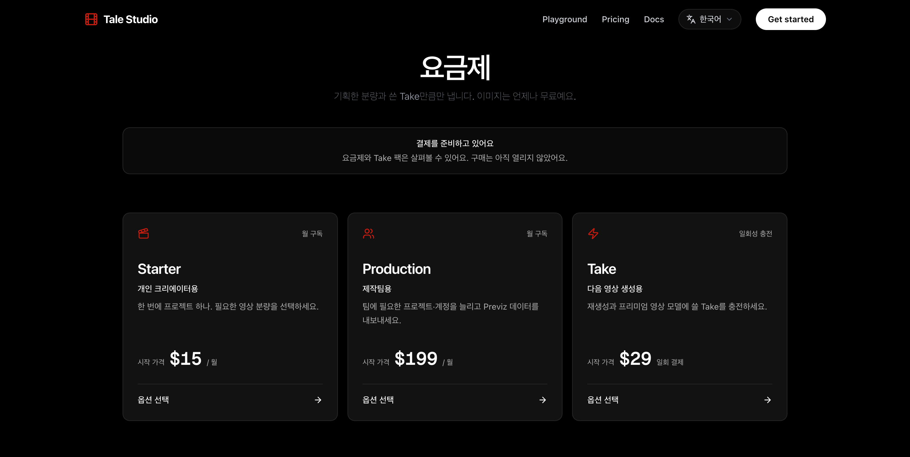
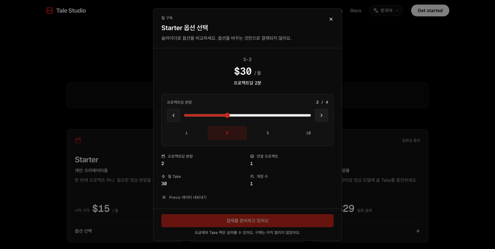
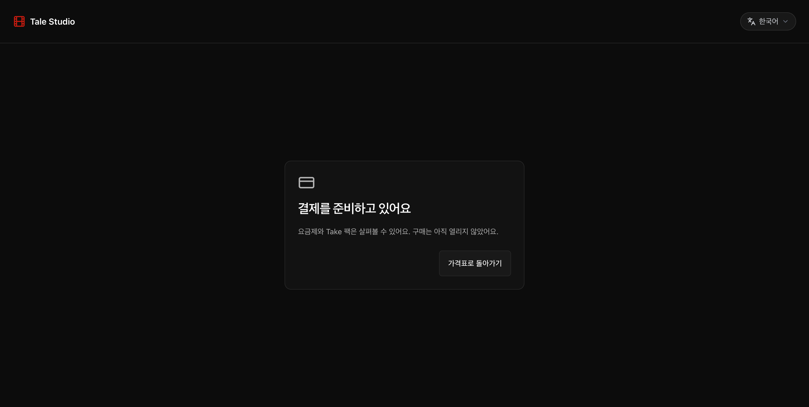
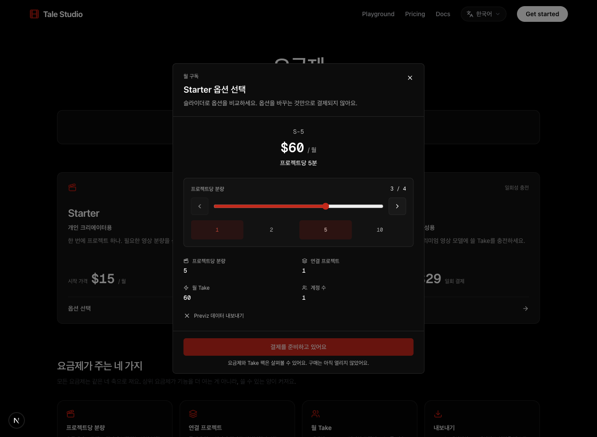
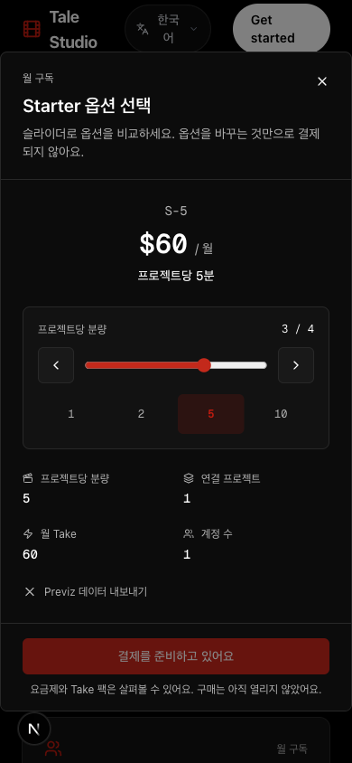
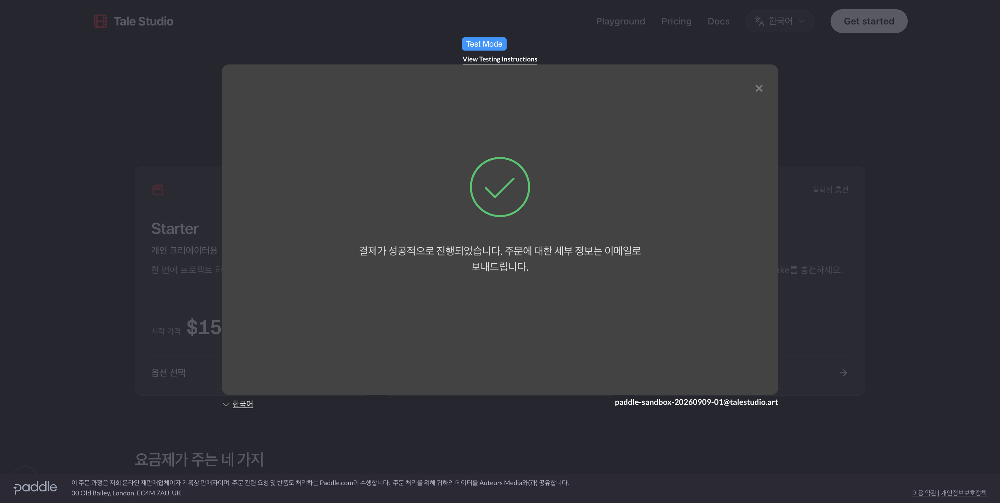
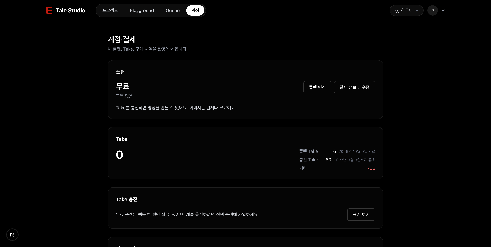
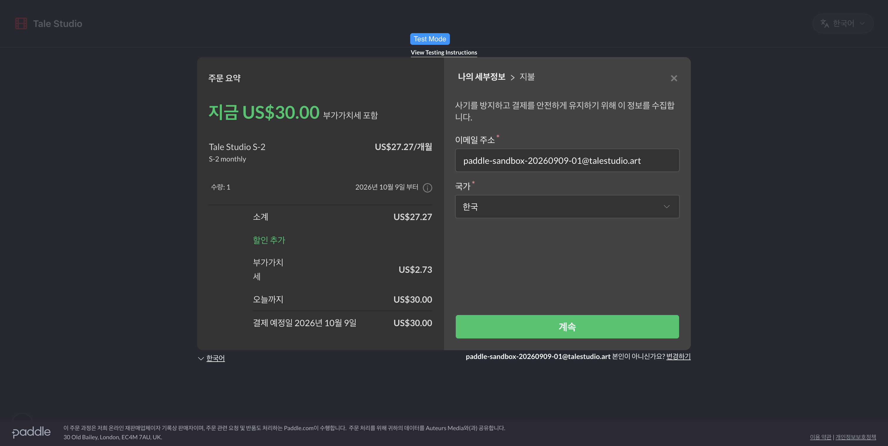

최신 main의 영상 변경을 보존하면서 결제 변경을 합친 31d6edc7을 정상 푸시했습니다. GitHub 자동 검사와 Vercel 운영 빌드가 성공했고 실제 talestudio.art 연결도 확인했습니다. 환불·만료 이중 차감 수정은 앱과 운영 DB에 반영했습니다. 과거 CLI 배포는 권한 오류로 실패했지만, 이번 Git 연동 배포는 성공했습니다.
“판매 시작 전 구매 비활성”의 뜻: Paddle 승인이 안 났다면 Paddle에서도 실결제를 받을 수 없습니다. 여기에 우리 사이트의 구매 버튼·결제 생성 요청도 꺼 둔 것입니다. 승인 후 기본 URL·알림 설정·실카드 검증 준비가 끝나기 전에 자동으로 판매가 시작되지 않도록 하는 추가 장치입니다. 배포 완료는 Paddle 승인 완료나 실제 과금 완료가 아닙니다.
1. 확인된 완료 항목
✅ S-1 월 구독: 테스트 결제 성공 → 실제 Paddle 알림 수신 → Take 16개 지급.
✅ Mini 일회성 구매: 테스트 결제 성공 → Take 50개 지급. 구독을 추가로 만들지 않음.
✅ 두 거래 전액 환불: Paddle 승인 후 각각 16개·50개 회수. 현재 계정 화면과 장부 잔액 0.
✅ 구독 해지: 다음 결제일 해지 예약과 즉시 해지를 각각 확인. 최종 무료 요금제·해지 상태.
✅ 중복 지급 방지: 같은 결제 완료 알림을 재전송해도 추가 지급 없음. 서버 응답과 기존 지급 행 불변 확인.
✅ 결제 링크: 로컬 /checkout에 기존 거래 번호로 들어오면 Sandbox 결제창 초기화. 새 결제 제출 없이 확인.
✅ 영수증 연결: 테스트 고객의 Sandbox 고객 포털 링크 생성 성공. 임시 로그인 링크는 기록하지 않음.
✅ 운영 설정: 윤대원 계정 B의 키·토큰·상품 13개를 Vercel 운영 설정에 저장하고 재조회로 일치 확인. 구매 허용 값은 false. Preview와 DB 설정은 변경하지 않음.
✅ 운영 웹훅 활성화·Paddle 발신 수신 검사: 계정 B의 기존 웹훅을 활성화했습니다. 공식 시뮬레이터의 단일 결제 실패 알림에 운영 서버가 HTTP 200으로 응답했습니다. 수신 기록 1건만 추가됐고 Take·구독·유료 공간은 바뀌지 않았습니다. 검사 후 실제 이벤트만 받는 설정으로 복원했습니다. 실제 카드 결제는 아닙니다.
✅ 최신 운영과 결제 분리본 통합: 처음에는 결제·검사 41개 파일을 별도로 분리했습니다. 이후 이미 main에 반영된 영상 변경을 그대로 보존해 통합했습니다. 최신 main 대비 결제 범위 차이는 40개 파일이며, 영상 코드·테스트·두 영상 마이그레이션·정기 실행 설정은 최신 main과 동일합니다. 통합본 자동 검사 2,495개 통과, 기존 건너뜀 27개, 실패 0. 타입·디자인·정상 커밋 검사와 원격 CI도 통과.
✅ 환불·만료 수정: 전액·부분 환불, 만료 정산 전후 순서, 사용분 부족액 유지, 생성 실패 반환, 새 구매분 사용을 검증. 실제 PostgreSQL 격리 검사 15개 통과.
✅ 개발·운영 DB 반영: 환불 계산 함수를 두 환경에 적용하고 타입을 재생성했습니다. 운영에는 검증한 환불 마이그레이션 하나만 적용했으며 기존 장부 행을 다시 쓰거나 삭제하지 않았습니다. 적용 후 함수와 실행 권한 재조회 완료. 이번 세션에서 영상 DB 마이그레이션은 실행하지 않았습니다.
✅ 배포 입력 범위: 통합본 CLI 사전 검사에서 앱 입력 591개, 내부 문서·키·에이전트 기록 경로 0개 확인. 최종 운영 배포는 같은 커밋의 Git 연동 빌드로 완료했습니다.
✅ 실제 운영 기본 점검: 비로그인 /pricing·/checkout HTTP 200, /checkout 검색 제외, 상품 13개·구매 가능 0개 확인. 결제 생성 요청은 503 payments_not_open, 비로그인 요금제 변경 요청은 401입니다. Starter 팝업의 다음 화살표로 S-1 $15 → S-2 $30 전환, 구매 버튼 비활성, Paddle SDK 미실행을 실제 운영 브라우저에서 확인했습니다. 모바일은 앞선 로컬 390px 검사 결과이며 이번 운영에서 재검사하지 않았습니다.
Sandbox A는 우리 소유의 테스트용 계정이고 Live B는 윤대원 명의의 실제 판매용입니다. A의 성공은 B의 판매 승인을 뜻하지 않습니다. 사용자가 공식 테스트 카드로 2건을 완료했으며 실제 카드 대금은 없습니다. 결제 링크 확인용 S-2 거래 1건은 미결제 상태로 남겼습니다.
추가 관찰: 비로그인 방문자가 한국어로 전환할 때 기존 언어 저장 코드에서 로그인 정보 없음 오류가 기록됩니다. 표시 언어는 바뀌고 새로고침 후 오류 배지는 사라졌습니다. 이번 결제 변경으로 생긴 문제는 아니며 아직 수정하지 않았습니다. 옵션 버튼·다음 화살표는 확인했지만, 이번 운영 잠금 검사에서 키보드만으로 슬라이더를 움직이는 동작은 확인하지 못했습니다.
검사 정리 완료: 별도 3001 서버와 검사 전용 탭을 종료하고 원래 의존성 연결을 복원했습니다. 기존 3000 개발 서버는 종료하지 않았으나 마지막 화면 재확인 때 연결되지 않아 수정 후 화면을 새로 수집하지는 못했습니다. DB 검사 준비 중 남은 빈 임시 공간 2개는 제가 만든 것임을 확인해 삭제했고, 이후 검사는 모두 롤백했습니다. 삭제 대상은 검사 전용 표·함수이며 고객 장부가 아닙니다.
2. 수정한 환불·만료 결함
환불로 회수한 Take가 원래 만료일에 다시 빠지던 결함을 수정했습니다. 같은 실제 Sandbox 장부 4행을 다시 조회해 수정 전후 계산을 비교했습니다. 고객 DB의 날짜나 잔액은 조작하지 않고 계산 기준 시간만 바꿨습니다.
시점
수정 전 잔액
수정 후 잔액
16개 + 50개 전액 환불 직후
0
0 ✅
기존 S-1 만료일 이후
-16
0 ✅
기존 Mini 만료일 이후
-66
0 ✅
이번 가격표·구매 비활성 변경이 만든 문제는 아니며, 기존 운영 기준 코드에도 있던 결함입니다. 화면·앱 계산과 DB 사용 판정·만료 정산을 함께 수정했습니다. 운영 코드와 환불 DB 함수 적용 및 재조회까지 완료했습니다. 위 잔액 비교와 PostgreSQL 15개 회귀 검사는 앞선 Sandbox·개발 DB의 증거입니다. 이번 운영에서 실제 카드 결제·환불을 새로 실행한 것은 아닙니다.
오너 승인 완료, 그대로 구현한 약속: “환불로 이미 회수한 Take는 원래 만료일에 다시 차감하지 않는다.” 왜: 미사용분을 환불한 고객의 잔액이 나중에 다시 줄어드는 것을 막습니다.
함께 유지한 약속: “환불 전에 이미 사용한 Take의 부족분은 기존 방침대로 음수로 남긴다.” 왜: 이중 차감을 고치면서 실제 사용분의 부족액까지 없어지지 않도록 합니다. 예를 들어 16개 중 6개 사용 후 전액 환불하면 만료 전후 모두 -6입니다.
3. 배포 완료 체크리스트
✅ 환불·만료 결함 수정. 승인받은 약속의 회귀 검사, 개발·운영 DB 반영과 함수 권한 재조회 완료.
✅ 중간 main 변경 보존. 이전 운영 54455bc4 위에 결제 변경을 통합. 다른 세션의 영상 코드·테스트·정기 실행을 되돌리지 않았습니다.
✅ 정상 커밋·main 푸시. 통합 커밋 31d6edc7, 작성자 jxcape <j@xcape.run>. 검사 우회나 강제 히스토리 덮어쓰기 없이 정상 푸시 완료. 결제 분리 작업공간에 미커밋 변경 없음.
✅ 전체 검사·클라우드 빌드. 로컬 2,495개 통과 및 원격 CI 성공. 동일 커밋의 Preview와 Production 모두 READY.
✅ 실제 도메인 공개. talestudio.art가 새 운영 배포에 연결됐음을 Vercel 조회와 실제 사이트 응답으로 확인했습니다. 로그인 없이 가격표와 결제 준비 페이지가 열립니다.
✅ 판매 시작 전 구매 비활성 확인. 실제 운영에서 옵션 비교는 가능하고 결제 생성·SDK 실행은 비활성입니다. 실카드 입력·과금·환불은 수행하지 않았습니다.
☐ 앞으로의 수동 배포 관문. 다른 세션 담당입니다. 현재 Vercel 자동 운영 도메인 연결은 켜져 있으며 이번에 설정을 변경하지 않았습니다. GitHub Private 전환·main 진입 규칙도 별도 작업입니다.
오너가 확인할 곳:운영 가격표 · 성공한 운영 배포 · 같은 커밋의 CI 성공 · 다른 세션용 배포 관문 인계. 이번 버전을 공개하기 위해 재배포나 Promote를 추가로 누를 필요는 없습니다. 과거 CLI 권한 오류와 이번 성공한 Git 배포를 구분합니다. 계정 연결·멤버·유료 좌석·작성자 명의는 바꾸지 않았습니다.
검증 범위: 기본 Next.js 빌드를 사용한 Vercel 운영 빌드는 성공했습니다. 별도로 시도한 로컬 --webpack 빌드는 기존 undici의 node: 모듈 처리 문제로 실패했습니다. 이 대체 빌드 경로를 고치려고 영상 코드나 의존성을 변경하지 않았습니다. 새 영상 기능 자체의 실제 생성 시험은 이번 결제 검증 범위가 아닙니다.
별도 기존 위험: 서로 다른 부분 환불 알림이 동시에 들어올 때 회수 누계 상한을 한 번에 판정하지 않는 경쟁 가능성은 이번 만료 수정의 범위 밖으로 남아 있습니다. 실제로 이번 테스트에서 발생한 문제는 아니며, 부분 환불 운영을 열기 전 추가 검증·보강 대상입니다.
4. 배포와 별개로 남은 판매 준비
심사 보완자료 담당자의 작업과는 별개인 기술 설정 목록입니다. 20:29 KST Paddle API에서 도메인의 심사 대기 상태와 운영 웹훅 연결을 재확인했습니다. 운영 대시보드는 로그인 필요 상태라 기본 URL·결제수단·사업·신원·정산 상태는 이번에 다시 확인하지 못했습니다. Payoneer와 정책 문서는 수정하지 않았습니다.
☐ Paddle의 운영 기본 결제 URL을 https://talestudio.art/checkout으로 저장. 이제 공개 경로는 배포됐습니다. 도메인 승인 상태에 따라 저장 가능 여부를 확인해야 합니다. URL 저장과 판매 승인은 다른 단계입니다.
☐ 카드 외 결제수단 해제 설정 저장 여부 확인. 앱의 카드 전용 요청과 Paddle 계정 설정을 함께 확인해야 합니다.
✅ 계정 B의 운영 웹훅 활성화·서명·수신 확인 완료. Paddle 공식 실패 알림 수신 성공, 실제 구매·지급·환불 검증과는 구분합니다.
☐ 담당자의 심사 보완 및 Paddle 판매 승인 완료 확인. Sandbox A 성공은 이 승인을 대신하지 않습니다.
☐ 승인 후 카드 소유자가 금액에 동의한 범위에서 실제 구매·Take 지급·환불 검증. 현재까지 실카드 과금은 없습니다.
☐ 위 준비 후 오너가 정한 시점에 사이트 구매 허용 설정을 켜기. 현재는 false이며 승인만으로 자동 판매하지 않습니다.
URL·판매 승인·실카드 검증이 남아 있으므로 “배포 완료”를 “지금 바로 판매 가능”으로 해석하면 안 됩니다. 실카드 검증 때 구매를 허용할 범위와 시간은 별도로 정해야 합니다. 이번 활성화는 새 구매 허용이 아니라 운영 알림을 받는 설정입니다.
5. 실제 테스트 화면

2026-09-09 운영 배포 후: 실제 talestudio.art의 세 가지 카드. 구매는 아직 열리지 않았다는 안내가 표시됩니다.

이번 운영 확인: Starter 카드 → 팝업 → 다음 옵션으로 S-2 $30 선택. 구매 버튼은 비활성입니다.

이번 운영 확인: 형식만 맞는 가짜 거래 번호를 붙여도 준비 중 안내만 표시. 거래 생성·Paddle SDK 실행·카드 입력 없음.
아래는 앞선 로컬·Sandbox 검사 당시 화면입니다. 이번 운영 화면과 구분합니다.

운영 잠금 재현: S-5 옵션과 가격을 살펴볼 수 있지만 구매 버튼은 비활성.

모바일 390px 화면에서 팝업 폭 358px. 화면 생김새의 최종 판단은 오너 검수 대상.

공식 테스트 카드로 완료한 Mini 구매. 실제 대금은 없음.

결함 수정 전 수집한 화면: 두 환불 직후 무료 요금제·잔액 0. 수정 후 계산에서는 무료·플랜·충전·기타도 모두 0임을 실제 장부로 확인했으며, 수정 후 화면 캡처는 아직 없음.

기존 거래 번호를 /checkout에서 불러온 결과. 이 링크 확인용 거래에는 카드 입력·결제 제출을 하지 않음.
근거 기록: paddle-live-preflight-result.json · paddle-production-rollout.json · paddle-refund-apply-live.json · paddle-refund-audit-live.json · paddle-sandbox-e2e-result.json · paddle-guard-runtime-verification.json · paddle-deployment-result.json · paddle-setup-progress.json. 이 문서는 검증 결과를 설명하는 개발 기록이며 심사 승인서가 아닙니다.